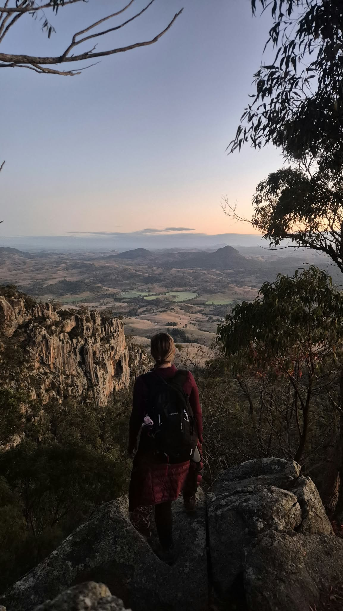

Hiking Mount Kosciuszko
My first snow, a sunset near Seaman’s Hut and a tent that nearly took off at 2:30 am.
Read storyFrom camping trips, to late night stargazing and dont forget the early alarms for hikes, this is a collection of the moments behind the photographs.
My first snow, a sunset near Seaman’s Hut and a tent that nearly took off at 2:30 am.
Read story
Big climbs, little flowers and a summit lost in cloud.
Read story